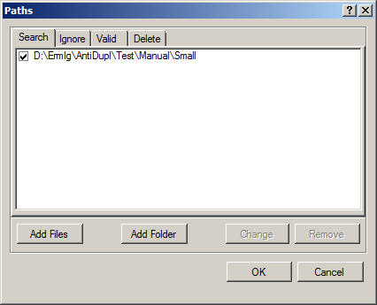

Paths Window
You can open the Path Window by using the Paths button of the Main Window's toolbar

or by using Paths - Paths item of the Main Menu. The Path Window has the following form:
In this window you can edit the lists of directories and files that are used as parameters in the search. There are four types of paths: those who need to Search, Ignore, previously tested (Valid), and recommended to Delete. More meaning of each of these types will be described below, and now dwell on how they can be edited:
You can add files with using the Add files button. This opens a standard directory to select files, where you can select one or more files. And these files will be added to the current list. Also, files can be added by dragging them into this window with the mouse.
Similarly, to add a new directory to the list you must click Add folder button and in the dialog that opens, select the desired directory. Also, directories can be added by dragging them into this window with the mouse.
You can change the previously added path by using of the Change button, or by double-clicking on it.
You can remove paths with using of the Remove button.
To edit the paths, you can also use the following hot keys:
Delete - to delete current path.
Control-C - to copy current path to a clipboard.
Control-V - to copy path from a clipboard
Control-X - to cut current path to clipboard.
Note that one type of directories and file paths can not be nested within each other You can closer look at the description of each type of paths below.
Search Paths
The most important and frequently used paths are the search paths. They are located on the first tab Search of the Paths Window. Usually these are paths where you want to search for images. By default, images are searched for the same in all subdirectories, but the user can change the corresponding parameter Search - Search in subdirectories of the search settings. You may also add to search an individual files that may be appropriate, for example, when you need to know: Is this specific picture unique or is not? Note an existance of the parameter Check - Compare images from one path with one another in search settings.
Ignore Paths
Sometimes there is a situation where for one reason or another should be ignored when searching for individual subdirectories or files. To do this, you must use the paths from the Ignore tab. Note that the Ignore Path has priority over the Search Path, because if the path is specified in both lists, the search is carried out in it will not.
Valid Paths
If you had search previously in the specified directory, then it will be unreasonable to compare again pictures with each other, and also to check for defects. To avoid this, you must use the paths from the Valid tab. Pictures lying in valid paths are compared only with not lying there. Literate tuning of these pathways can significantly reduce the search time, such as in the case when we compare the new directory with the previously tested directories.
Delete Paths
Program AntiDupl.NET generates prompts to the user. It automatically determines the worst image of a pair of duplicates. Quite often the images are identical, and therefore choice of the worst picture from the pair is random. In order to eliminate this uncertainty you must use paths from the Delete tab. If the program will meet two similar images, it would prefer to delete the one that lies in the Delete paths. If a picture with better quality will be in the directory to delete, then the program is offering replace it from there.
Note: In most cases, the user only has to specify a single search directory. In this case, you can turn on the Search - One search path item of the Main Menu, and use a simplified version of the dialogue (as in previous versions of AntiDupl).